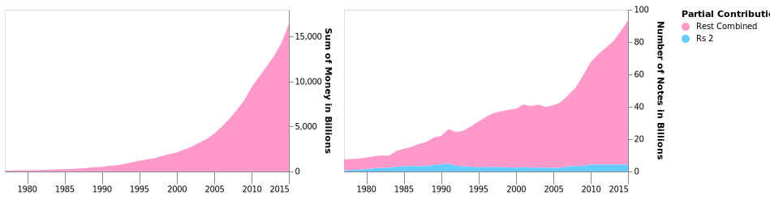
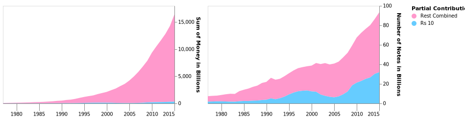
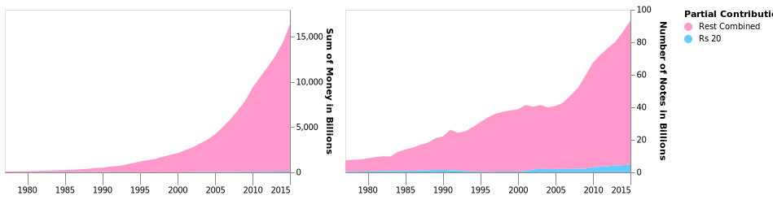
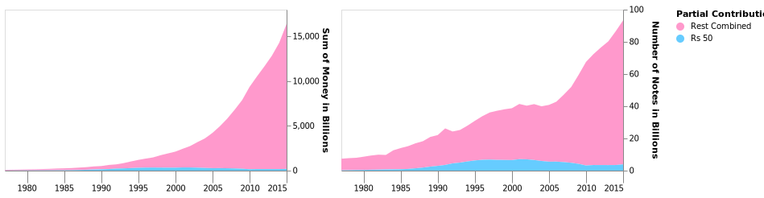
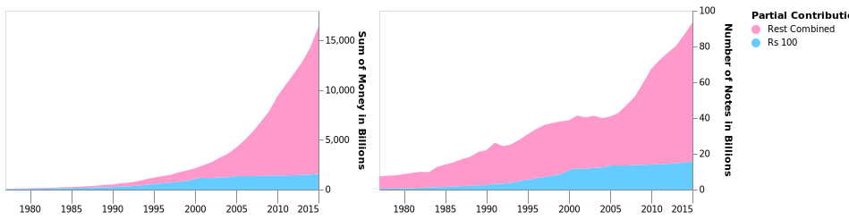
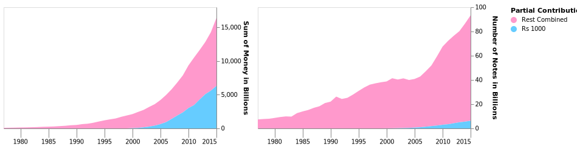

SYNECDOCHE : One as part of the Whole
Finding out the contribution of individual denominations to Indian Currency
Step 1 : Plotting "Money" and "Number" for all Denominations
The first table works with three axes:
- X Axis: Plots the year.
- 2. Y Axis Left: Plots the number of notes in 'millions'.
- Y Axis Right: Plots the amount of money (value of notes X number of notes) in 'billions'.
The chart comprises of three layers:
- Bar Chart: Plotting the amount of money.
- Line Chart: Plotting the number of notes.
- Scatter Plot: Again, plotting the number of notes; this is a repeat of the above line chart.
As the colour of the line chart merges with the colour of the bar chart, I decided to add a layer of points in order to increase visibility.

Step 2: Highlighting a Denomination
In the above graph, it is difficult to identify the contributions of individual denominations to:
- The total number of notes in circulation.
- The amount of money in circulation (money = number x value).
Below are charts comparing 1. on the left and 2. on the right.
Rs. 1
Rs. 2
Rs. 5

Rs. 10
Rs. 20
Rs. 50
Rs. 100
Rs. 500

Rs. 1000
Step 3: Some Analysis
There being no predecided narrative, all the author can offer is a basic analysis of what can possibly be inferred from the above charts.
- Low Denominations - Rs. 1, 2, 5 - The number of notes of Rs. 1 have remained more or less the same from 1977 to 2015. Rs. 2 and Rs. 5 seem to have had minor fluctuations in number, while increasing marginally overall. However due to the low value of these denominations, they seem to have had no visible effect on the amount of money in circulation.
- Starting in 1996 and again around 2005, the number of notes of Rs. 10 have seen a steady rise. In fact as of 2015, it constitutes approximately 30%+ of all the notes in circulation and has more or less had the same share since at least 1977. Despite the higher value of these notes, they have had no impact on thee overall money; to understand this phenomenon, we might have to look at the Highest Denominations - Rs. 500 and Rs. 1000.
- These two denominations are unremarkable in their contributions to both the number of notes as well as the amount of money in circulation.
- Highest Denominations - Rs. 500, 1000 - Rs. 500 was introduced in 1987 and Rs. 1000 in 2000. In terms of number if notes, neither have increased or decreased abnormally. However due to the significantly higher value of these notes, they have come to represent about 50% and 30% of the amount of money in circulation. Assuming the authorities had some method to check if notes come back to banks in regular intervals and found that most were not actively being used, it would make sense that that Government would choose to target these two denominations for Demonetization. High Denomination notes are ideal for storing large sums of money and hence it would make sense to hoard large amounts untaxed money using these.
Without taking any sides in the debate around Demonetization, it is clear that Rs. 500 and Rs. 1000 notes have had a huge impact on our usage of currency. With the introduction of the new Rs. 2000 note just after the Demonetization, one will have to wait for further data to understand the impact each note in this new era.